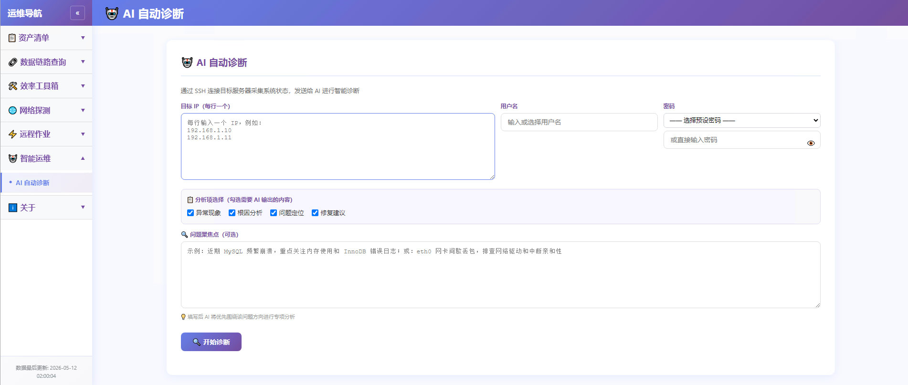
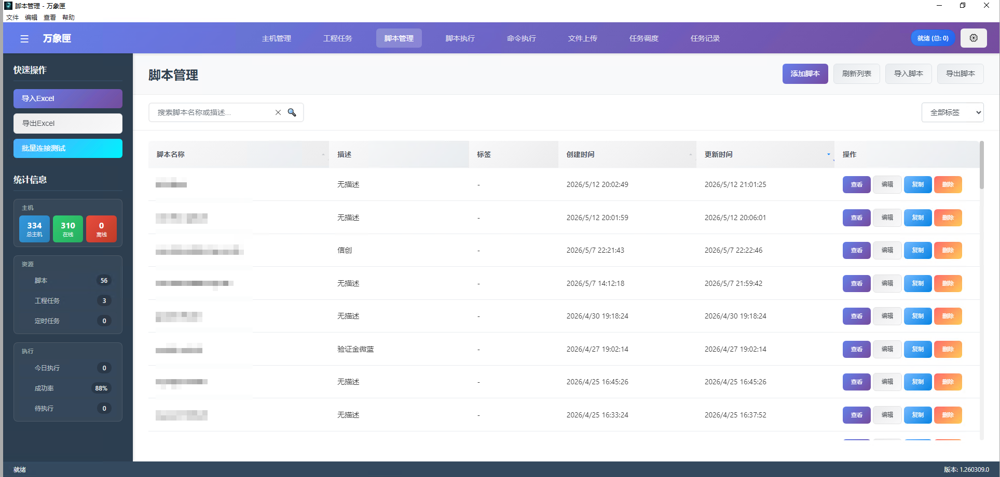
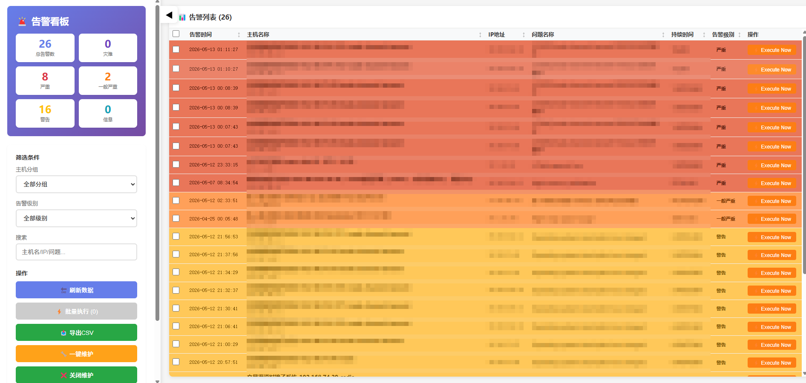
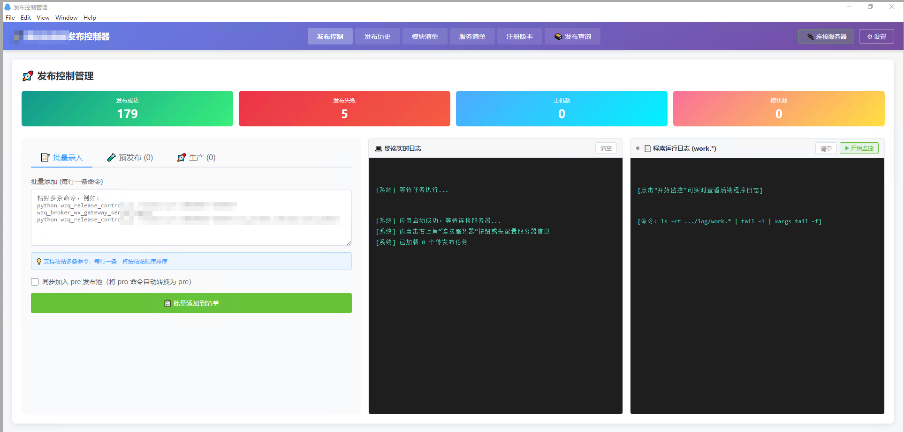
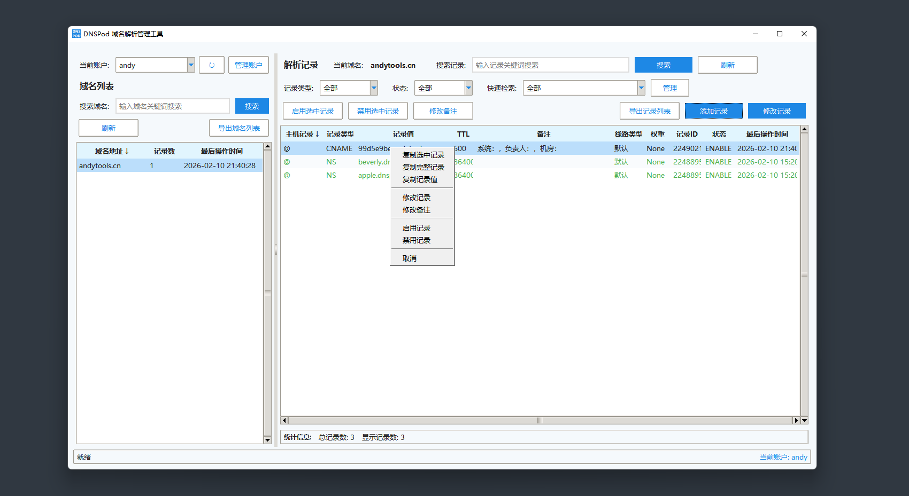
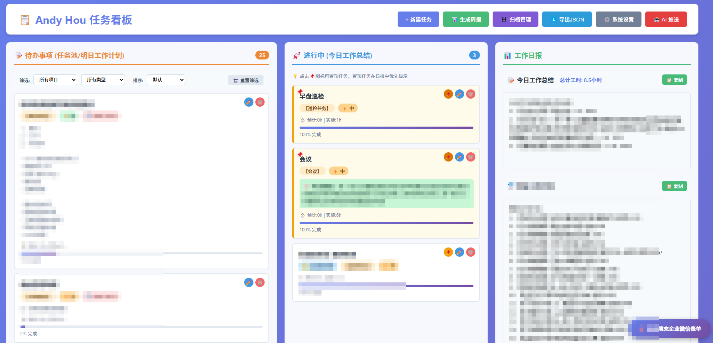
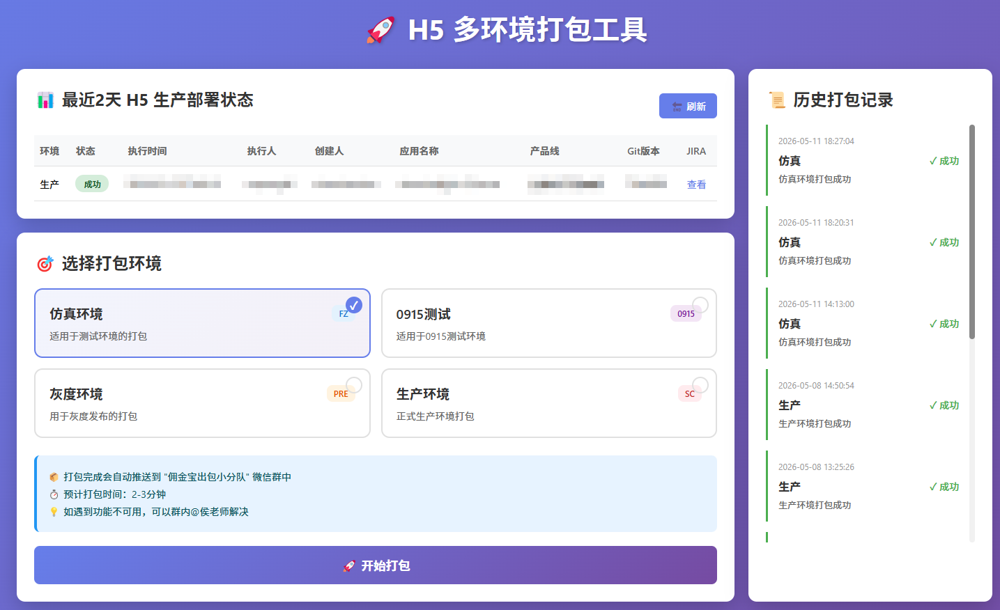
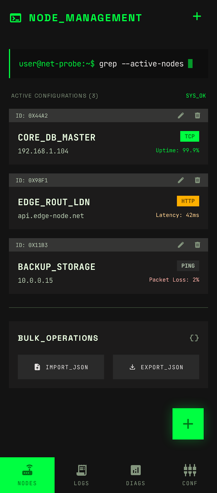

十年金融证券核心系统运维，借助 Vibe Coding
将深厚的行业经验转化为真实可用的产品。
深耕证券行业核心系统，任职国金证券，负责佣金宝、腾讯自选股等后端系统稳定运行，精通大型分布式架构容量规划与保障。
主导国密系统升级改造、信创化迁移及跨机房数据库容灾演练，具备极强的线上应急处置与故障排查能力。
主导开发运维辅助智能体、万象匣等自动化平台，借助 AI 工具高效产出，推动从传统运维向 AIOps 智能化转型。

面向金融证券核心运维场景打造的全栈 AIOps 平台。集 CMDB 资产管理、AI 智能诊断、NTP 批量对时、批量 Ping 检测等能力于一体，驱动传统运维向智能化转型。

面向金融证券核心系统运维场景打造的 Windows 桌面应用，将传统 CGI 运维工具重构为现代化 Electron 客户端。支持千台级服务器批量管理，覆盖脚本执行、文件分发、工程编排全流程。

基于 Zabbix API 打造的金融级实时告警监控看板。聚焦关注主机组的活跃告警，提供灾难/严重/警告等多级别统计汇总，并发查询大规模主机群，是日常值班巡检的核心工具。

面向金融证券运维团队打造的 Windows 端发布流程可视化管理工具。支持生产/预发布双环境切换，通过 SSH 远程执行发布任务，实时输出日志，完整记录每次发布过程，让运维发布有据可查。

基于腾讯云官方 API 开发的桌面管理工具，彻底解决 Web 端解析管理的繁琐流程。支持多账户快速切换、解析记录实时检索与批量运维，为专业运维人员打造。

面向个人运维日常工作管理打造的轻量看板工具。三栏式任务流转（待办/进行中/已完成），内置 AI 驱动的日报周报自动生成，以及 Gemini + 企业微信 Webhook 的智能推送，让工作进展实时可见。

面向 H5 应用发布流程打造的多环境打包平台。支持仿真/0915测试/灰度/生产四套环境一键切换，生产环境设有二次确认保护，打包完成自动推送企业微信，将繁琐的手动打包流程标准化、可追溯化。

基于 Flutter 开发的跨平台移动端网络拨测工具。在脱离 PC 的场景下，用手机快速验证服务器、API 及网络节点的连通性。支持 TCP / HTTP / HTTPS / ICMP 四种协议，可强制指定 IPv4/IPv6 网络栈，精准排障不误判。
该项目目前正在积极开发中，功能持续迭代，敬请期待正式发布。
EBOOS Flow Inspector
注入 EBOOS 系统的工作流效率插件。右下角悬浮双按钮，一键掌握待我审批队列与我的在途流程，精准定位流程阻塞在哪个审批人手中，告别反复翻页查进度。
ITSM Toolbox
注入 ITSM 系统的多功能工具箱。悬浮搜索按钮一键展开面板，免去繁琐页面跳转，直接完成资产搜索、资源下载、值班查看，并内置网络申请表单生成器，支持 IP 机房自动识别与 Excel 导出。
Ke Form Assistant
注入采购管理系统的 IT 费用填报效率工具。针对行情数据授权费用的 IT 采购结果确认表，实现深沪 LEVEL2、港股、美股、恒指等多市场数据一键勾选或粘贴填报，并自动匹配供应商和项目，同步提醒未完成的 IT 类报销单。